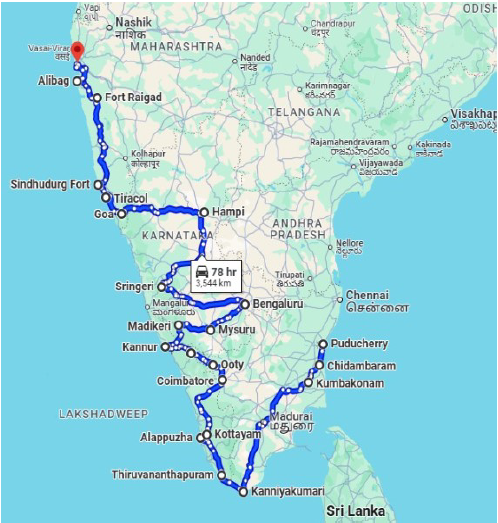

Expedition 4: A Glance at India’s Coastal Areas
Salient Features
- Country: India (South to North West)
- Date: Feb 25- Mar 25 (Upcoming)
- Route: Pondicherry – Kanyakumari - Mumbai
- Visit : 19 destinations x 21 days x 2000 kM
- Exp Team ( Field) : Participants (7) + Logistics (3) = 10
- Project Category: Case Study & Pilot Project
- Expedition Themes–Activities–Events
- Themes: (C09 & C10) Ancient Civilisation - Heritage -Cultures and Spirituality (Yoga - Meditation - inner consciousness )
Concept
- This Expedition is planned with members participating from HKC Think Tank – scholars - special invitees to enjoy, experience, observe, participate with other team members through ideas, thoughts, discussions for development of core objectives of HKC as outlined in doctrine placed on the website.
- It is also aimed that Team members get opportunity to explore exclusive destinations and places in line HKC Codes (C09, C10) which is the primary theme of this expedition. Specially, the young generation participant will get opportunity to exhibit their skills.
Objectives
Key objectives of the expedition included:
- Expeditions- 04 aims to give philanthropic services by way of activity & events by reference.
- HKC committed to climate change, green energy, environment, Nutrition.
- Rock art, Caves, Ancient Civilisation, Ancient & Current Culture, Art & Museum, Classical Dance, Music, Science & Technology, University & Research Institute, NGOs
- Thus technology, knowledge, collaborations, lectures, interaction, with institutions with scholars, academia along the enroute is solicited by way of sharing of thoughts and interactions with them and some of the Activities and events.
General Information
- HKC Expedition (04) is in continuation of previous Expedition (03) which went from Pondicherry – Kanyakumari – Mumbai
- Exp (04) is scheduled to go from Pondicherry – Kanyakumari – Mumbai. Thereby, it will complete full circle of HKC Expeditions going all around India.
Route & Places visited :

Pondicherry Chidambaram Kumbakonam Kanyakumari Trivandrum
Alappuzha Kottayam Coimbatore Ooty Wayanad Kannur Coorg Mysuru
Bangalore Sringeri Goa Sindhudurg Raigad Alibag Mumbai
Essence
To brain-storm how we can achieve:
- Giving back to the society (by way of Awareness and Impact) what is visualised through outlined Themes?
- Expedition -04 was to achieve Self-sustainability in terms of the HKC themes, activities and events